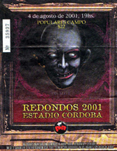

4 de agosto de 2001 |
||||
|  |
Hace cinco años, más precisamente el sábado 4 de agosto de 2001, la ciudad de Córdoba fue el escenario del más espectacular show que, en lo personal, jamás haya visto. Todo estaba pactado para comenzar a las 19 hs., sin embargo no siempre sucede lo que los papeles dicen. Desde temprano por la mañana algo raro ya podía respirarse en el aire, el clima no era el mismo de siempre; como si algún ser misterioso, invisible, incorpóreo ya se hubiera adueñado de las calles de la ciudad. Cada esquina, cada bar del centro cordobés eran pequeños lugares de encuentro de todas las bandas, que sin importar dónde ni cuándo, no dudan en viajar miles de kilómetros por un instante de felicidad. La música podía escucharse por todas partes, los cánticos de esas gargantas roncas, las banderas que por ese día serían la escenografía de la ciudad. Todavía faltaban algunas horas para el momento esperado por todos, pero la espera no debía pasar en vano, este ser mítico que ya anunciaba su presencia, aun necesitaba de todos los ritos y ceremonias que le dieran el poder suficiente para dirigir el circo. |
|||
Miles de personas fueron encaminándose poco a poco hasta donde sabían que iban a encontrarlo; el Estadio Chateau Carreras era el lugar elegido. Grandes columnas humanas caminaban todas con un mismo destino, y un poco más allá los oficiales de policía más amables que pude ver en todos los recitales de rock (quizá por remordimientos de culpas antiguas).Ya nada faltaba, solo dos horas debían pasar. Desde dentro del estadio miles de gargantas se unían en una sola voz capaz de llegar hasta los |
||||
Página 14 |
||||